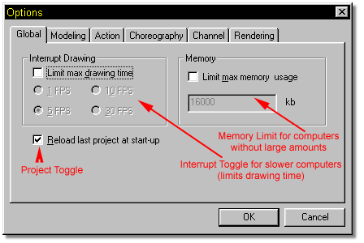
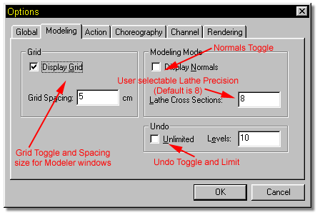
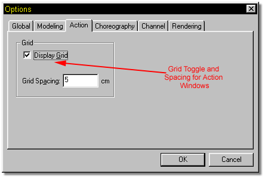
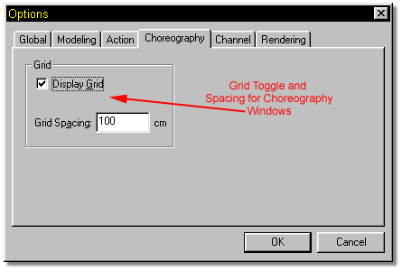
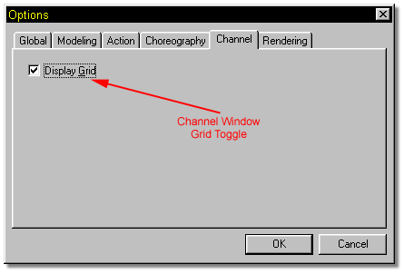
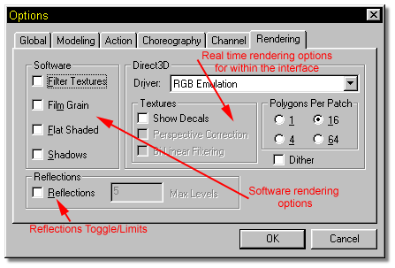

The Options item in the Tools menu contains a window with six tabs that allow
you to customize, or set preferences for the toolsets in the interface.
The Options item in the Tools menu contains a window with six tabs that allow
you to customize, or set preferences for the toolsets in the interface.

The Global tab on the Options dialog allows you to make changes that affect the way the software works.
Complex models may take a long time to draw making a turn, move, zoom or preview animation seem very slow. Turning on “Limit max drawing time” will allow interupt drawing. This means that the redraw of the screen can be interrupted even if the screen is not completely redrawn. There are 4 selectable drawing speeds.
Sometimes it is necessary to limit the amount of memory allocated to the software for speed purposes. The renderer will save as much information in RAM as possible. If the amount of information becomes too large, it will begin to swap it out to virtual memory located on your hard drive. When this begins to occur, loading and saving the information needed to render can become very cumbersome because virtual memory is so much slower than actual RAM. If the amount of RAM needed to render is below your system memory, this number can be adjusted to minimize swapping. If the rendering requires more RAM than you have, there is no choice but to let the computer use virtual memory on your hard drive. The average user should never have to adjust this setting.

The Modeling tab on the Options dialog allows you to make changes to the way the modeling interface looks and works. You can set Lathe preferences, grid sizing, etc.

The Action tab on the Options dialog allows you to toggle the grid on and off in an Action window.

The Choreography tab on the Options dialog allows you to toggle the grid that appears in a choreography window on and off, as well as setting the grid spacing.

The Channels tab allows you to toggle the grid on and off in a channels window.

The Rendering tab on the Options dialog allows you to make changes to the settings that affect rendering within the interface. These settings do not affect the final output at all.
The Software section of the Rendering Options tab contains the options for non- real time rendering. When set, these options are applied to Render Mode and Progressive Render Mode. They will not affect output created with the Render to File button.
The Filter Textures option allows shadows and materials to be antialiased, and decals to be filtered and antialiased. This dramatically improves the quality of an image and also substantially increases the rendering time.
The Film Grain option will apply a film grain (dithered appearance) to your rendered image.
If Flat Shaded is selected, rendering will have no shading.
Checking the Shadows item will include raytraced, high quality shadows in the rendering. This option will also substantially increase render times.
The Reflections section of the Rendering Options tab contains options to allow reflective objects to reflect their environmment. Max levels allows you to specify the number of times a ray of light will reflect off an object. Adjusting Max Levels prevents a ray from getting caught in an infinite loop bouncing between reflective surfaces.. The higher the number of levels you choose, the longer the rendering time.
The Direct 3D/QD3D section of the Rendering Options tab contains settings for the softwares real time rendering engine.
The Driver drop down menu contains a list of drivers supported by your video card. RGB emulation is a software driver that uses the RAM in your system and does not directly utilize components of the video card. Some video cards have extra hardware and RAM dedicated to accelerating D3D/QD3D. If yours is one of these cards, an extra driver called HAL will be installed. Although HAL drivers are very fast, they are limited by the amount of dedicated RAM on your video card. If your video card has 2-4MB of RAM for D3D acceleration, you should select a lower video resolution like 800x600 and keep the number of open windows down to 1 or 2 if you choose to use the HAL driver.
The Textures section of the Rendering Options tab contains several checkboxes.
The Show Decals checkbox will allow you to see your decals on the model when you are in real time rendering mode. When you edit a model, the real time textures and maps must be recreated, so you may see a pause of a few seconds or even longer before the textures and maps reappear, especially when previewing a complex model.
The Bilinear Filtering option will smooth or blur the pixelization that appears on objects that are very large or extremely close to the camera. Since the realtime renderer is a polygon based system, patches must be converted to a polygonal format before rendering.
The Polygons Per Patch setting allows you to choose the number of polygons you want each patch subdivided into. The larger the number, the smoother the edges of your model will appear but this will also slow down real time operation.
Finally, if you are not operating your video card in 24 bit mode, selecting dither will remove the banding in the shading caused by the lack of available colors.